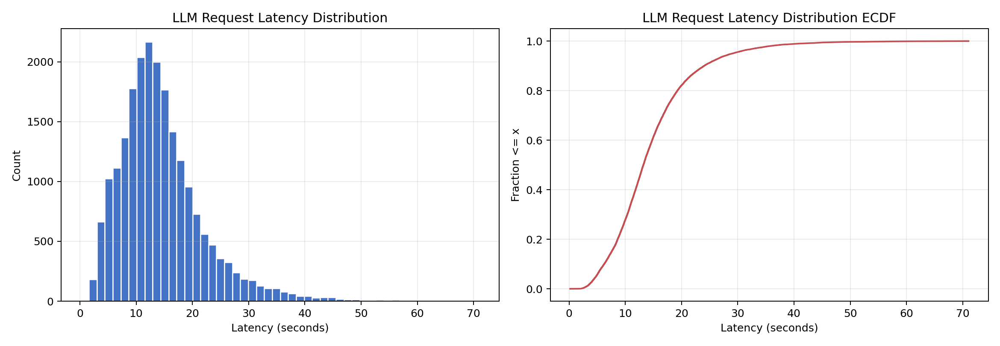
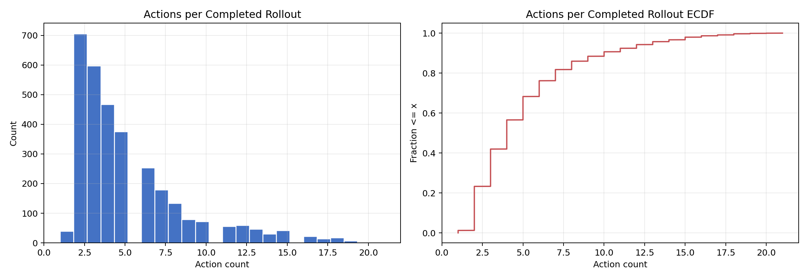
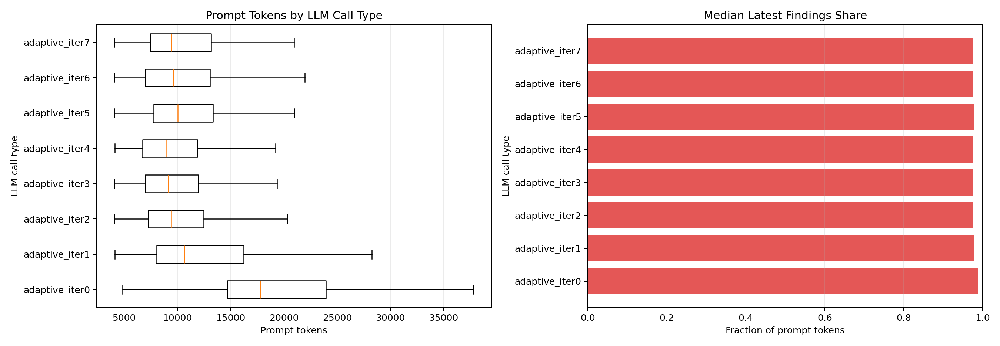
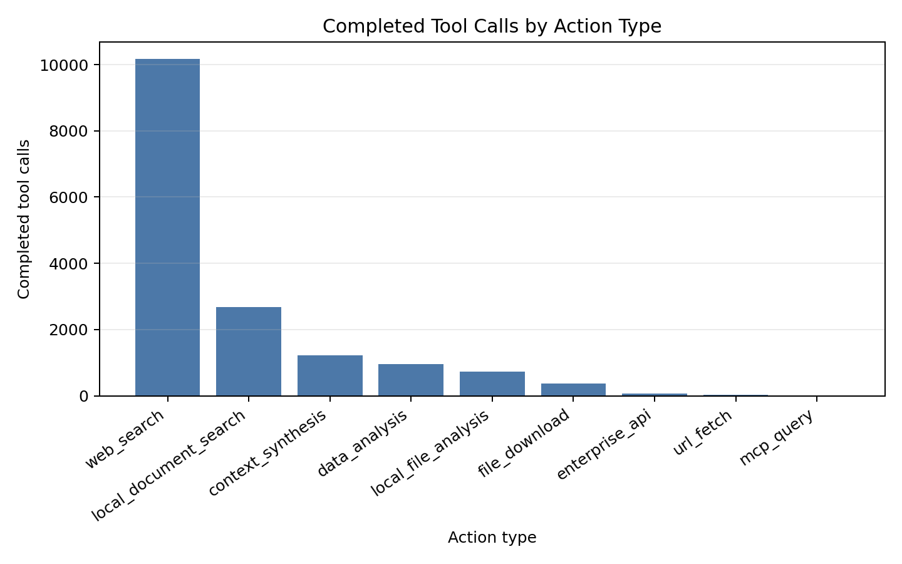
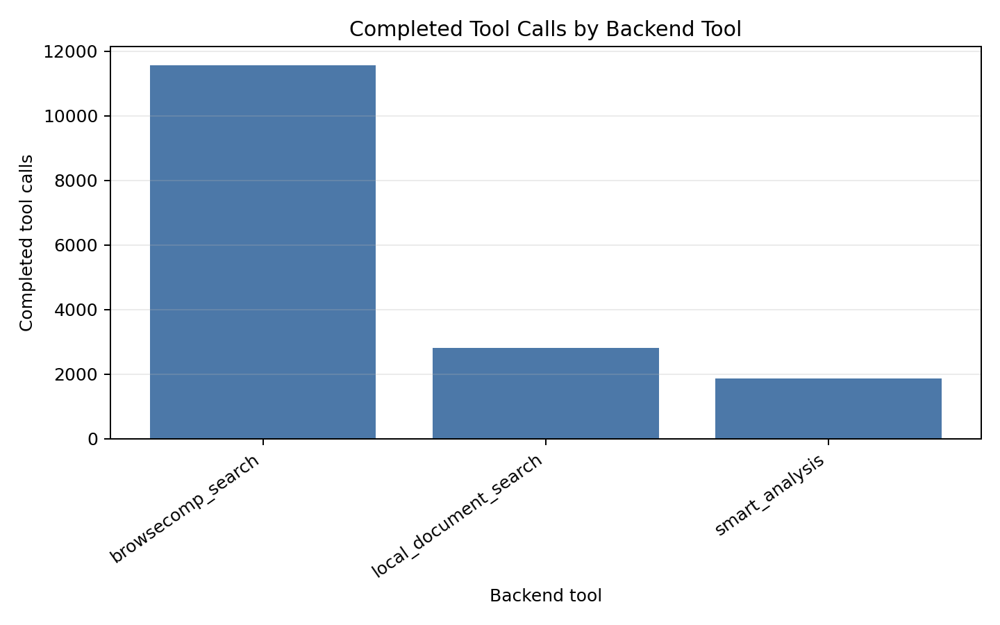

Runtime Analysis Viewer
Run: privacy_agent_qwen3_8b_no_plan_companyctx_planningonly_v1
This viewer is generated from the saved actor logs and per-rollout session artifacts. Tool timings are exact at the action level; LLM timings are exact overall but only prompt sizes are attributable to specific call types because the actor logs request durations without request IDs under concurrency.
Overview Plots
These are the quickest plots to check for overall throughput shape, rollout duration, and how often the agent keeps iterating.
LLM Latency Distribution
Overall LLM request latency. Exact latency by log_name is not recoverable from the concurrent actor logs.


Rollout Duration Distribution
Completed rollout wall-clock durations, filtered to rollouts with a final report artifact.

Iteration Count Distribution
Final iteration counts across completed rollouts.

Actions Per Rollout
How many tool actions each completed rollout executed before producing a report.


Context + Iteration Behavior
This section is usually the most useful for explaining why the run feels slow. It focuses on prompt size and how each extra iteration adds wall time.
Prompt Tokens by LLM Call Type
Large adaptive prompts dominate; the second panel shows how much of each prompt is Latest Findings.


Rollout Duration by Final Iteration
Completed rollout time split by how many iterations the agent ended up using.

Median Time per Iteration
Median wall time per iteration, split into tool execution versus residual LLM and orchestration time.

Tool Timing
These plots use per-action execution times stored in each rollout's final action plan, so this breakdown is much more precise than the text logs alone.
Tool Latency by Action Type
Distribution of per-action execution time using action categories from the final action plan.

Tool Latency by Backend
Distribution of execution time grouped by the backend tool actually used.

Tool Counts by Action Type
Volume of completed tool calls by action type.


Tool Counts by Backend
Volume of completed tool calls by backend tool.


Summary Tables
Counts
| Metric | Value |
|---|---|
| llm_requests | 21,481 |
| prompt_records | 8,248 |
| rollouts_all | 3,222 |
| rollouts_completed_with_report | 3,202 |
| actions_completed_with_report | 16,228 |
| iteration_records_completed_with_report | 9,932 |
LLM Request Latency
| Statistic | Seconds |
|---|---|
| count | 21,481 |
| mean | 14.56 |
| median | 13.22 |
| min | 0.200 |
| p90 | 24.02 |
| p95 | 29.06 |
| p99 | 40.95 |
| max | 71.03 |
Logged Prompt Tokens
| Statistic | Tokens |
|---|---|
| count | 8,248 |
| mean | 14,314.71 |
| median | 13,109.00 |
| min | 4,096 |
| p90 | 24,737.00 |
| p95 | 27,319.85 |
| p99 | 31,360.21 |
| max | 38,779 |
Completed Rollout Duration
| Statistic | Seconds |
|---|---|
| count | 3,202 |
| mean | 80.59 |
| median | 52.35 |
| min | 7.096 |
| p90 | 191.46 |
| p95 | 242.65 |
| p99 | 323.56 |
| max | 436.60 |
Completed Action Execution
| Statistic | Seconds |
|---|---|
| count | 16,228 |
| mean | 5.411 |
| median | 0.479 |
| min | 0.003 |
| p90 | 18.60 |
| p95 | 22.50 |
| p99 | 32.88 |
| max | 75.39 |
Iteration Count Distribution
| Final iteration | Rollouts |
|---|---|
| 1 | 929 |
| 2 | 860 |
| 3 | 455 |
| 4 | 295 |
| 5 | 181 |
| 6 | 131 |
| 7 | 87 |
| 8 | 75 |
| 9 | 52 |
| 10 | 137 |
Prompt Count by Log Name
| Log name | Prompt summaries |
|---|---|
| adaptive_iter0 | 3,215 |
| adaptive_iter1 | 2,005 |
| adaptive_iter2 | 1,024 |
| adaptive_iter3 | 641 |
| adaptive_iter4 | 442 |
| adaptive_iter5 | 311 |
| adaptive_iter6 | 227 |
| adaptive_iter7 | 166 |
| adaptive_iter8 | 125 |
| adaptive_iter9 | 90 |
| analysis_synthesis | 2 |
Action Timing by Type
| Action type | count | mean | median | p90 | p95 | p99 | max |
|---|---|---|---|---|---|---|---|
| web_search | 10,171 | 0.699 | 0.433 | 0.599 | 0.699 | 14.46 | 58.76 |
| local_document_search | 2,681 | 16.15 | 16.41 | 25.57 | 29.83 | 39.21 | 63.52 |
| context_synthesis | 1,229 | 6.991 | 0.504 | 18.39 | 21.51 | 30.62 | 74.87 |
| data_analysis | 965 | 13.68 | 13.92 | 23.15 | 28.14 | 42.31 | 75.39 |
| local_file_analysis | 722 | 15.55 | 15.52 | 26.99 | 31.88 | 39.79 | 65.89 |
| file_download | 373 | 9.872 | 0.870 | 23.70 | 30.89 | 41.82 | 52.96 |
| enterprise_api | 59 | 9.747 | 9.339 | 20.54 | 21.24 | 23.01 | 23.43 |
| url_fetch | 20 | 2.762 | 0.416 | 15.02 | 16.60 | 17.27 | 17.44 |
| mcp_query | 8 | 6.468 | 0.441 | 16.91 | 19.18 | 21.00 | 21.45 |
Action Timing by Backend Tool
| Backend | count | mean | median | p90 | p95 | p99 | max |
|---|---|---|---|---|---|---|---|
| browsecomp_search | 11,562 | 0.431 | 0.429 | 0.580 | 0.649 | 0.961 | 3.766 |
| local_document_search | 2,801 | 18.20 | 17.19 | 26.63 | 30.73 | 40.68 | 65.89 |
| smart_analysis | 1,865 | 17.07 | 15.47 | 24.99 | 30.05 | 42.61 | 75.39 |
Preview: rollouts.csv
| rollout_id | has_report | start_timestamp | end_timestamp | duration_s | current_iteration | max_iterations | total_actions | completed_actions | failed_actions | pending_actions | tool_exec_time_s | non_tool_time_s |
|---|---|---|---|---|---|---|---|---|---|---|---|---|
| DR0001_06a7f3db_00515dd3 | true | 2026-04-14T20:23:05.366031 | 2026-04-14T20:23:54 | 48.63 | 3 | 10 | 4 | 4 | 0 | 0 | 1.420 | 47.21 |
| DR0001_06a7f3db_03c42d65 | true | 2026-04-14T19:57:39.594670 | 2026-04-14T19:58:11 | 31.41 | 1 | 10 | 2 | 2 | 0 | 0 | 1.025 | 30.38 |
| DR0001_06a7f3db_03ff20b0 | true | 2026-04-14T21:41:42.390175 | 2026-04-14T21:41:58 | 15.61 | 1 | 10 | 2 | 2 | 0 | 0 | 1.214 | 14.40 |
| DR0001_06a7f3db_085ed3de | true | 2026-04-14T19:52:43.592159 | 2026-04-14T19:53:17 | 33.41 | 1 | 10 | 2 | 2 | 0 | 0 | 15.51 | 17.90 |
| DR0001_06a7f3db_08b86319 | true | 2026-04-14T20:28:18.584588 | 2026-04-14T20:31:58 | 219.42 | 10 | 10 | 17 | 15 | 0 | 2 | 87.74 | 131.68 |
| DR0001_06a7f3db_0d7456c5 | true | 2026-04-14T20:04:47.023216 | 2026-04-14T20:06:06 | 78.98 | 3 | 10 | 4 | 4 | 0 | 0 | 38.75 | 40.22 |
| DR0001_06a7f3db_0de1c9e3 | true | 2026-04-14T20:27:57.564575 | 2026-04-14T20:28:11 | 13.44 | 1 | 10 | 2 | 2 | 0 | 0 | 0.909 | 12.53 |
| DR0001_06a7f3db_160daa89 | true | 2026-04-14T20:54:32.293085 | 2026-04-14T20:55:32 | 59.71 | 2 | 10 | 4 | 4 | 0 | 0 | 31.55 | 28.16 |
| DR0001_06a7f3db_1876e880 | true | 2026-04-14T20:28:25.185514 | 2026-04-14T20:28:43 | 17.81 | 1 | 10 | 2 | 2 | 0 | 0 | 1.018 | 16.80 |
| DR0001_06a7f3db_19062d39 | true | 2026-04-14T19:52:55.856675 | 2026-04-14T19:54:01 | 65.14 | 3 | 10 | 4 | 4 | 0 | 0 | 33.42 | 31.72 |
| DR0001_06a7f3db_1b73c629 | true | 2026-04-14T20:54:36.462928 | 2026-04-14T21:01:44 | 427.54 | 10 | 10 | 17 | 15 | 0 | 2 | 256.19 | 171.35 |
| DR0001_06a7f3db_1caee9e3 | true | 2026-04-14T21:28:39.371775 | 2026-04-14T21:29:07 | 27.63 | 2 | 10 | 3 | 3 | 0 | 0 | 1.173 | 26.45 |
| DR0001_06a7f3db_1dd02b00 | true | 2026-04-14T21:29:09.731906 | 2026-04-14T21:30:39 | 89.27 | 2 | 10 | 4 | 4 | 0 | 0 | 58.55 | 30.71 |
| DR0001_06a7f3db_1ddbb6ed | true | 2026-04-14T20:28:44.213627 | 2026-04-14T20:29:04 | 19.79 | 1 | 10 | 2 | 2 | 0 | 0 | 0.720 | 19.07 |
| DR0001_06a7f3db_20e5a314 | true | 2026-04-14T21:41:42.023577 | 2026-04-14T21:43:03 | 80.98 | 3 | 10 | 5 | 5 | 0 | 0 | 35.65 | 45.33 |
Preview: actions.csv
| rollout_id | has_report | action_id | action_type | backend_tool | status | execution_time_s | iteration_completed | completion_time | created_from_research_step | preferred_tool |
|---|---|---|---|---|---|---|---|---|---|---|
| DR0001_06a7f3db_00515dd3 | true | fallback_action_0 | web_search | browsecomp_search | completed | 0.498 | 0 | 2026-04-14T20:23:05.865895 | fallback_generation | BrowseCompSearchTool |
| DR0001_06a7f3db_00515dd3 | true | fallback_action_1 | web_search | browsecomp_search | completed | 0.444 | 0 | 2026-04-14T20:23:06.310560 | fallback_generation | BrowseCompSearchTool |
| DR0001_06a7f3db_00515dd3 | true | adaptive_0_web_search_search_for_lee'_0 | web_search | browsecomp_search | completed | 0.164 | 1 | 2026-04-14T20:23:17.333660 | BrowseCompSearchTool | |
| DR0001_06a7f3db_00515dd3 | true | adaptive_1_web_search_search_for_lee'_0 | web_search | browsecomp_search | completed | 0.313 | 2 | 2026-04-14T20:23:32.841272 | browsecomp_search | |
| DR0001_06a7f3db_03c42d65 | true | fallback_action_0 | web_search | browsecomp_search | completed | 0.500 | 0 | 2026-04-14T19:57:40.097669 | fallback_generation | BrowseCompSearchTool |
| DR0001_06a7f3db_03c42d65 | true | fallback_action_1 | web_search | browsecomp_search | completed | 0.525 | 0 | 2026-04-14T19:57:40.622678 | fallback_generation | BrowseCompSearchTool |
| DR0001_06a7f3db_03ff20b0 | true | fallback_action_0 | web_search | browsecomp_search | completed | 0.664 | 0 | 2026-04-14T21:41:43.055794 | fallback_generation | BrowseCompSearchTool |
| DR0001_06a7f3db_03ff20b0 | true | fallback_action_1 | web_search | browsecomp_search | completed | 0.550 | 0 | 2026-04-14T21:41:43.606040 | fallback_generation | BrowseCompSearchTool |
| DR0001_06a7f3db_085ed3de | true | fallback_action_0 | local_document_search | local_document_search | completed | 15.11 | 0 | 2026-04-14T19:52:58.718373 | fallback_generation | LocalFileSearchTool |
| DR0001_06a7f3db_085ed3de | true | fallback_action_1 | web_search | browsecomp_search | completed | 0.402 | 0 | 2026-04-14T19:52:59.120501 | fallback_generation | BrowseCompSearchTool |
| DR0001_06a7f3db_08b86319 | true | fallback_action_0 | web_search | browsecomp_search | completed | 0.458 | 0 | 2026-04-14T20:28:19.062875 | fallback_generation | BrowseCompSearchTool |
| DR0001_06a7f3db_08b86319 | true | fallback_action_1 | web_search | browsecomp_search | completed | 0.492 | 0 | 2026-04-14T20:28:19.555374 | fallback_generation | BrowseCompSearchTool |
| DR0001_06a7f3db_08b86319 | true | adaptive_0_web_search_find_lee's_mark_0 | web_search | browsecomp_search | completed | 0.305 | 1 | 2026-04-14T20:28:30.392228 | BrowseCompSearchTool | |
| DR0001_06a7f3db_08b86319 | true | adaptive_0_web_search_identify_fsma_2_1 | web_search | browsecomp_search | completed | 0.436 | 1 | 2026-04-14T20:28:30.086874 | BrowseCompSearchTool | |
| DR0001_06a7f3db_08b86319 | true | adaptive_1_web_search_search_for_lee'_0 | web_search | browsecomp_search | completed | 0.299 | 2 | 2026-04-14T20:28:42.499965 | browsecomp_search |
Preview: iterations.csv
| rollout_id | has_report | iteration | action_count | wall_time_s | tool_time_s | non_tool_time_s |
|---|---|---|---|---|---|---|
| DR0001_06a7f3db_00515dd3 | true | 0 | 2 | 0.945 | 0.942 | 0.002 |
| DR0001_06a7f3db_00515dd3 | true | 1 | 1 | 11.02 | 0.164 | 10.86 |
| DR0001_06a7f3db_00515dd3 | true | 2 | 1 | 15.51 | 0.313 | 15.19 |
| DR0001_06a7f3db_03c42d65 | true | 0 | 2 | 1.028 | 1.025 | 0.003 |
| DR0001_06a7f3db_03ff20b0 | true | 0 | 2 | 1.216 | 1.214 | 0.002 |
| DR0001_06a7f3db_085ed3de | true | 0 | 2 | 15.53 | 15.51 | 0.020 |
| DR0001_06a7f3db_08b86319 | true | 0 | 2 | 0.971 | 0.950 | 0.021 |
| DR0001_06a7f3db_08b86319 | true | 1 | 2 | 10.84 | 0.741 | 10.10 |
| DR0001_06a7f3db_08b86319 | true | 2 | 2 | 12.11 | 0.603 | 11.51 |
| DR0001_06a7f3db_08b86319 | true | 3 | 2 | 24.73 | 13.75 | 10.97 |
| DR0001_06a7f3db_08b86319 | true | 4 | 2 | 38.78 | 24.04 | 14.73 |
| DR0001_06a7f3db_08b86319 | true | 5 | 1 | 10.06 | 0.158 | 9.906 |
| DR0001_06a7f3db_08b86319 | true | 6 | 1 | 32.85 | 22.08 | 10.78 |
| DR0001_06a7f3db_08b86319 | true | 7 | 1 | 15.31 | 0.377 | 14.93 |
| DR0001_06a7f3db_08b86319 | true | 8 | 1 | 10.83 | 0.130 | 10.70 |
Preview: prompt_records.csv
| timestamp | log_name | prompt_tokens | prompt_chars | latest_findings_tokens | latest_findings_chars | instructions_tokens | planning_context_tokens | task_definition_tokens | documents_or_evidence_tokens | reporting_context_tokens | other_tokens |
|---|---|---|---|---|---|---|---|---|---|---|---|
| 2026-04-14T19:35:22.720000 | adaptive_iter0 | 24,757 | 107,329 | 24,526 | 106,231 | 0 | 17 | 69 | 0 | 0 | 118 |
| 2026-04-14T19:35:23.363000 | adaptive_iter0 | 17,872 | 64,182 | 17,661 | 63,221 | 0 | 17 | 44 | 0 | 0 | 123 |
| 2026-04-14T19:35:24.396000 | adaptive_iter0 | 18,501 | 79,955 | 18,289 | 78,962 | 0 | 17 | 45 | 0 | 0 | 123 |
| 2026-04-14T19:35:24.623000 | adaptive_iter0 | 27,053 | 115,017 | 26,810 | 113,877 | 0 | 17 | 76 | 0 | 0 | 123 |
| 2026-04-14T19:35:24.827000 | adaptive_iter0 | 19,023 | 68,010 | 18,844 | 67,290 | 0 | 17 | 31 | 0 | 0 | 104 |
| 2026-04-14T19:35:25.123000 | adaptive_iter0 | 15,693 | 63,459 | 15,481 | 62,503 | 0 | 17 | 44 | 0 | 0 | 123 |
| 2026-04-14T19:35:25.520000 | adaptive_iter0 | 19,764 | 70,086 | 19,551 | 69,125 | 0 | 17 | 51 | 0 | 0 | 118 |
| 2026-04-14T19:35:25.541000 | adaptive_iter0 | 17,318 | 49,229 | 17,107 | 48,238 | 0 | 17 | 44 | 0 | 0 | 123 |
| 2026-04-14T19:35:26.760000 | adaptive_iter0 | 25,092 | 100,690 | 24,841 | 99,465 | 0 | 17 | 92 | 0 | 0 | 117 |
| 2026-04-14T19:35:27.493000 | adaptive_iter0 | 23,564 | 101,093 | 23,310 | 99,837 | 0 | 17 | 95 | 0 | 0 | 117 |
| 2026-04-14T19:35:28.254000 | adaptive_iter0 | 29,683 | 113,594 | 29,471 | 112,598 | 0 | 17 | 53 | 0 | 0 | 117 |
| 2026-04-14T19:35:32.723000 | adaptive_iter0 | 14,532 | 53,941 | 14,320 | 52,957 | 0 | 17 | 44 | 0 | 0 | 124 |
| 2026-04-14T19:35:35.080000 | adaptive_iter0 | 24,483 | 77,467 | 24,253 | 76,421 | 0 | 17 | 63 | 0 | 0 | 123 |
| 2026-04-14T19:35:36.184000 | adaptive_iter0 | 29,591 | 104,753 | 29,349 | 103,633 | 0 | 17 | 75 | 0 | 0 | 123 |
| 2026-04-14T19:35:37.571000 | adaptive_iter0 | 21,209 | 78,963 | 20,994 | 77,969 | 0 | 17 | 48 | 0 | 0 | 123 |
Preview: llm_requests.csv
| timestamp | duration_s |
|---|---|
| 2026-04-14T19:35:20.960000 | 6.410 |
| 2026-04-14T19:35:21.087000 | 6.550 |
| 2026-04-14T19:35:22.068000 | 8.190 |
| 2026-04-14T19:35:22.129000 | 9.830 |
| 2026-04-14T19:35:22.515000 | 8.620 |
| 2026-04-14T19:35:22.812000 | 8.320 |
| 2026-04-14T19:35:22.949000 | 8.750 |
| 2026-04-14T19:35:23.209000 | 8.980 |
| 2026-04-14T19:35:23.789000 | 9.260 |
| 2026-04-14T19:35:23.830000 | 9.940 |
| 2026-04-14T19:35:24.473000 | 9.960 |
| 2026-04-14T19:35:24.821000 | 10.23 |
| 2026-04-14T19:35:25.707000 | 11.83 |
| 2026-04-14T19:35:26.891000 | 12.97 |
| 2026-04-14T19:35:29.227000 | 15.30 |
Raw Files + Caveats
Raw Outputs
Limitations
- LLM duration logs do not include request IDs, so exact latency attribution to log_name is not possible under concurrency.
- Prompt summaries cover large prompts (>= 4096 tokens) or overflow cases, not every single LLM call.
- Rollout timing analysis is filtered to runs with a saved report to avoid in-progress session artifacts.